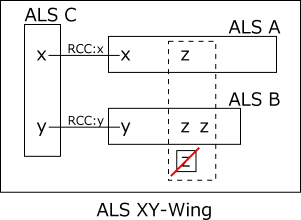
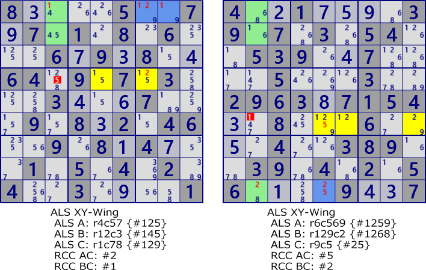

ALS XY-Wing
ALS XY-Wing is an analysis algorithm using threeALS.
It is the case of the next ALS Chain 3ALS.
For ALS A B C, A and C have RCC x and B and C have RCC y. Both A and B have the digit z.
In this state, z can be excluded when z related to all z in A and B is outside ALS.
If z outside ALS is true, ALS A and B becomes LockedSet(x is included in A, y is in B).
In ALS C, the candidate digits of the cell is insufficient.
As a characteristic of the analysis algorithm using ALS,
in many cases, there are many solutions at the same time.
And there are other analysis algorithms of the ALS system.

Exsample of ALS XY-Wing

8....5..7.7.1.8.6...6.9.8..64.9.7.3...3...7...9.8.2.46..9.8.4...1.5.4.2.4..3....1
4..1....39.7.3.54..539..7....5...3..2963.7154..8...6....4..389..39.4.2.56....9..7
ALS XY-Wing program
The size of ALS XZ is the sum of the sizes of the three ALSs and searches in ascending order of size. ALS is sorted by size, and it is used for abortion of search. The search procedure of ALS XY - Wing is as follows.
- Set the ALS(ALS C in the figure) to be the axis.
- Selecte Two ALSs in combination(ALS A, ALS B).
- Examine the condition of ALS A (different from C). If unsuitable, proceed to next combination selection with skip.
- Find the RCC of ALS A-C.
- Examine the condition of ALS B (different from C, AB not overlapping). If unsuitable, proceed to next combination selection with skip.
- Find the RCC of ALS B and ALS C. The RCC of ALS B-C is different from the RCC of ALS A-C.
- For candidate numbers z other than RCC of ALS A, B, search for cells covering all z in ALS outside ALS.
public partial class ALSTechGen: AnalyzerBaseV2{
public bool ALS_XY_Wing( ){
ALSMan.ALS_Search(1);
if( ALSMan.ALSLst==null || ALSMan.ALSLst.Count<=2 ) return false;
for( int szT=4; szT<15; szT++ ){ //Search in descending order of the total size of 3 ALS
if( _ALSXYWingSub(szT) ) return true;
}
return false;
}
private bool _ALSXYWingSub( int szT ){
//(ALS sorted by size)
foreach( var UC in ALSMan.ALSLst.Where(p=>p.Size<=szT-2) ){
if( !UC.singly ) continue;
int szS=szT-UC.Size;
UALS UA, UB, UApre=null;
int nxt=0, RccAC=-1, RccBC=-1;
var cmb = new Combination(ALSMan.ALSLst.Count,2);
while( cmb.Successor(nxt) ){
nxt=0;
UA = ALSMan.ALSLst[cmb.Cmb[0]];
if( !UA.singly || UA==UC || UA.Size>szS-1 ) continue;
if( UA!=UApre ){
RccAC = ALSMan.GetALSRCC(UA,UC); //RCC
if( RccAC.BitCount()!=1 ) continue;
UApre=UA;
}
UB = ALSMan.ALSLst[cmb.Cmb[1]];
if( !UB.singly || UB.Size>(szS-UA.Size) ) continue; //Skip using "Sort by size"
nxt=1;
if( UB==UC || UB.Size!=(szS-UA.Size) ) continue;
if( !(UA.B81&UB.B81).IsZero() ) continue; //overlap
RccBC = ALSMan.GetALSRCC(UB,UC); //RCC
if( RccBC.BitCount()!=1 ) continue;
if( RccAC==RccBC ) continue;
int EFrB = (UA.FreeB&UB.FreeB).DifSet(RccAC|RccBC);
if( EFrB==0 ) continue;
foreach( var no in EFrB.IEGet_BtoNo() ){
int noB=(1<<no);
Bit81 UE = new Bit81();
foreach( var P in UA.UCellLst.Where(p=>(p.FreeB&noB)>0)) UE.BPSet(P.rc);
foreach( var P in UB.UCellLst.Where(p=>(p.FreeB&noB)>0)) UE.BPSet(P.rc);
Bit81 TBD = ( new Bit81(pBDL,noB)) - (UA.B81|UB.B81|UC.B81);
foreach( var rc in TBD.IEGet_rc() ){
if( !(UE-ConnectedCells[rc]).IsZero() ) continue;
pBDL[rc].CancelB=noB; SolCode=2;
}
if(SolCode>0){ //===== ALS XY-Wing fond =====
.
. (Solution report code)
.
return true;
}
}
}
}
return false;
}
}